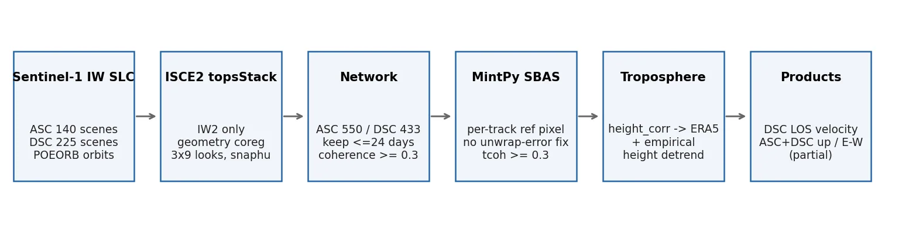
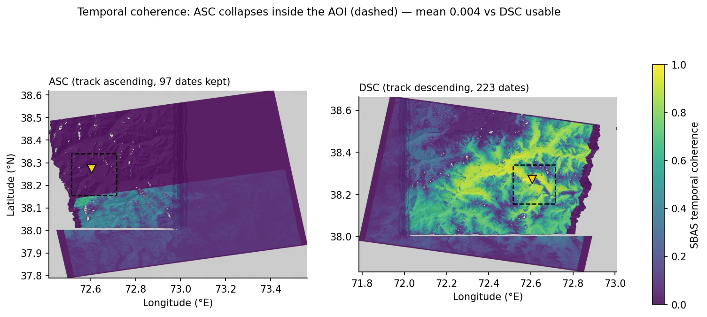
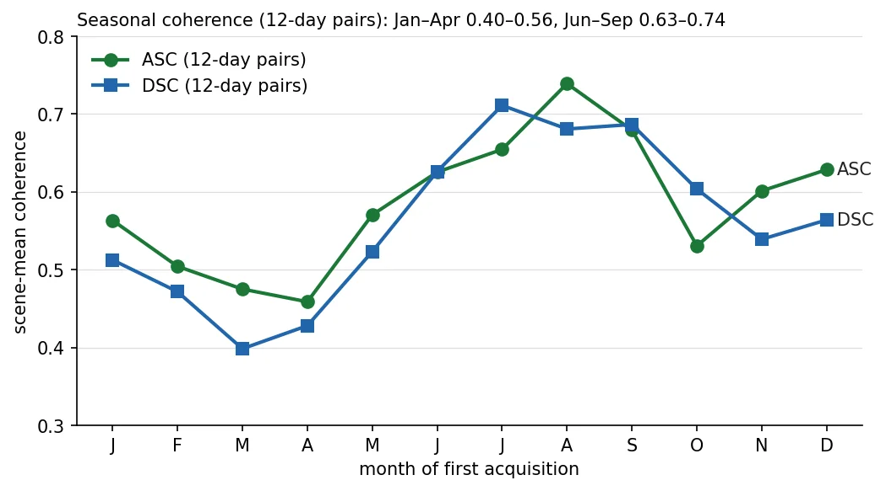
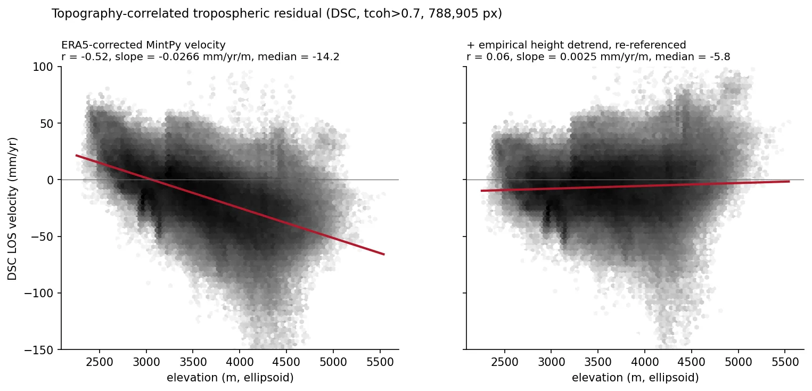
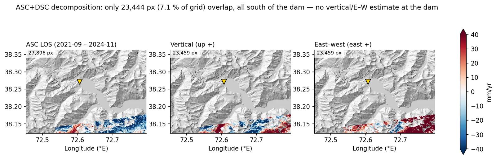
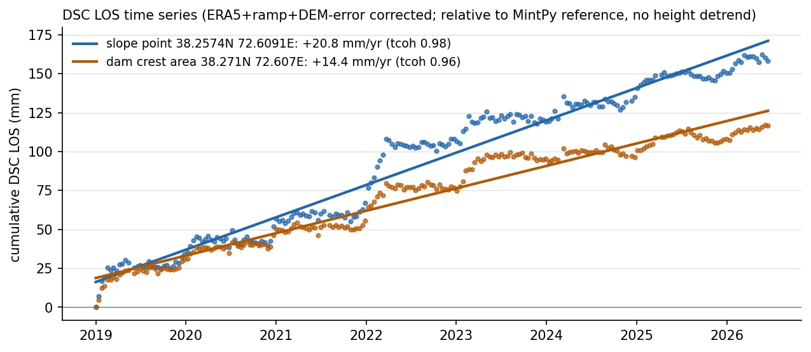

Usoi 자연댐(Sarez 호) Sentinel-1 SBAS 변위 모니터링Usoi Natural Dam (Lake Sarez) Sentinel-1 SBAS Monitoring
타지키스탄 파미르의 Usoi 자연댐 일대를 Sentinel-1 상승·하강 두 궤도 SBAS(ISCE2+MintPy)로 처리해 수직/동서 분해를 시도함. 하강궤도는 2019–2026 223개 날짜로 AOI 육지 78.7%에서 속도장을 얻었지만, 상승궤도는 AOI 내부 시간결맞음이 0.004로 무너져 분해는 댐에서 남쪽 7.1% 영역에만 남았음. 최종 제품은 ERA5와 경험적 고도 detrend로 보정한 하강궤도 LOS 속도장임.Processed Sentinel-1 ascending and descending SBAS stacks (ISCE2 + MintPy) over the Usoi natural dam in the Tajik Pamir and attempted a vertical/east-west decomposition. The descending track (223 dates, 2019–2026) yielded velocities over 78.7% of the land AOI, but ascending temporal coherence collapsed to 0.004 inside the AOI, so the decomposition survives only on 7.1% of the grid south of the dam. The delivered product is a descending LOS velocity map corrected with ERA5 plus an empirical elevation detrend.
배경 · 목표Background
- Usoi 댐은 1911년 산사태로 생긴 자연댐으로, 뒤의 Sarez 호 담수량이 커서 댐체·주변 사면 안정성 감시 대상임.
- 해발 3,000–5,500 m 급경사 지형이라 C밴드 InSAR 에 결맞음 저하·대류권 성층지연·기하 왜곡이 모두 걸림.
- 상승·하강 두 궤도를 결합하면 LOS 를 수직/동서 성분으로 나눌 수 있어 댐체 침하와 사면 수평이동을 구분할 수 있다는 것이 출발점이었음.
- The Usoi dam was formed by a 1911 landslide and impounds Lake Sarez; the dam body and surrounding slopes are a long-standing monitoring target.
- Elevations of 3,000–5,500 m and steep relief expose C-band InSAR to decorrelation, stratified tropospheric delay and geometric distortion at once.
- Combining ascending and descending geometries should split LOS motion into vertical and east-west components, separating dam settlement from lateral slope motion.
방법Method
- ASF 에서 SLC 365씬(ASC 140, DSC 225, 약 1.5 TB) 수집, COP30 DEM 을 타원체고로 변환, ESA POEORB 정밀궤도 사용.
- ISCE2 topsStack: AOI 가 IW1/IW2 경계에 걸려 IW2 단일 서브스와스로 고정, 작은 AOI 라 ESD 대신 geometry 코레지, 3×9 룩, snaphu 언랩(ASC 550, DSC 433 페어).
- 공유 디스크가 가득 차 페어별 병합 직후 버스트 간섭도 삭제(페어당 1.23 GB → 42 MB), 날짜별 zip 삭제 인터리브로 처리 완주.
- MintPy SBAS: 자동 기준점이 개별 간섭도 35% 에서 신뢰불가해 시간결맞음이 전역 0 이 되는 문제를 찾아, 유지 간섭도 다수에서 연결성분이 살아 있는 최고결맞음 픽셀을 트랙별로 자동 선택하도록 바꿈. 네트워크는 ≤24 일·결맞음 ≥0.3.
- 대류권: 고도 상관 보정(height_correlation)이 과소보정 → ERA5(PyAPS) 223 날짜 → 잔차를 반복 이상치 제거 선형회귀로 고도 detrend 후 안정암반 재기준, DEM 평탄도로 호수 마스킹.
- 분해: 두 트랙을 0.0005° 공통격자로 geocode 하고 공통 기준점으로 재참조한 뒤 MintPy asc_desc2horz_vert 로 수직·동서 산출.
- Collected 365 SLCs from ASF (140 ascending, 225 descending, ~1.5 TB), converted COP30 to ellipsoidal heights, used ESA POEORB orbits.
- ISCE2 topsStack: fixed to sub-swath IW2 because the AOI straddles IW1/IW2, geometry-only coregistration (ESD has no burst overlap in a small crop), 3×9 looks, snaphu (550 ascending / 433 descending pairs).
- On a full shared disk, merged each pair and immediately deleted its burst interferograms (1.23 GB → 42 MB per pair) and interleaved per-date zip deletion to finish the stack.
- MintPy SBAS: traced a global temporal-coherence collapse to an auto reference pixel that was unreliable in 35% of interferograms; replaced it with a per-track pixel that is connected in most kept pairs with the highest coherence. Network limited to ≤24-day, coherence ≥0.3 pairs.
- Troposphere: height_correlation under-corrected, so switched to ERA5 (PyAPS, 223 dates), then removed the remaining elevation trend by robust linear regression, re-referenced to stable rock, and masked the lake using DEM flatness.
- Decomposition: geocoded both tracks to a common 0.0005° grid, re-referenced to a shared point, and ran MintPy asc_desc2horz_vert for vertical and east-west components.
결과Results
- DSC 최종 속도장: AOI 육지 204,311 px(78.7%), 중앙값 −7.9 mm/yr, p2–p98 −101 ~ +38.8 mm/yr (재계산 일치).
- 댐 반경 1 km: DSC LOS +9.6 mm/yr(중앙값, 1,422 px, 평균 시간결맞음 0.98) — 위성 쪽 이동. DSC 단독이라 수직/수평 분리는 못 함.
- ERA5 보정으로 속도~고도 상관 r −0.52, 기울기 −0.027 mm/yr/m, 장면 중앙값 −14 mm/yr 까지 줄였고, 경험적 detrend 후 r 0.06.
- ASC 는 AOI 내부 시간결맞음 평균 0.004(공간결맞음 0.56·그림자 9% 로 기하 문제는 아님). 기준점을 AOI 로 옮겨도 회복되지 않음.
- 분해 유효 화소 23,459 px(공통격자 7.1%), 전부 댐 남쪽 — 댐 1 km 내 분해값 0개. 분해 결과는 독립 2×2 역산으로 최대차 0.11 mm/yr 로 재현됨.
- Descending product: 204,311 land pixels (78.7% of the AOI), median −7.9 mm/yr, p2–p98 −101 to +38.8 mm/yr (reproduced from the h5).
- Within 1 km of the dam: +9.6 mm/yr LOS (median, 1,422 px, mean temporal coherence 0.98), i.e. toward the satellite. With one geometry, vertical and horizontal motion cannot be separated.
- ERA5 reduced the velocity–elevation correlation to r = −0.52 (slope −0.027 mm/yr/m, scene median −14 mm/yr); the empirical detrend brought r to 0.06.
- Ascending temporal coherence inside the AOI averaged 0.004, although spatial coherence was 0.56 and shadow only 9%. Moving the reference into the AOI did not recover it.
- Only 23,459 decomposition pixels (7.1% of the grid) survive, all south of the dam — none within 1 km of it. An independent 2×2 inversion reproduces the up/east grids to within 0.11 mm/yr.







배운 점 · 한계What I learned · Limitations
- MintPy maxCoherence 자동 기준점은 평균 결맞음만 봄. 이 장면에서는 550 간섭도 중 192 개에서 연결성분 0 인 픽셀이 뽑혀 시간결맞음이 전역 0 이 됐다 — 기준점은 개별 간섭도 신뢰성으로 골라야 함.
- 파미르 C밴드는 계절 결맞음 이동이 커서 12일 페어 장면평균 결맞음이 3–4월 0.40–0.46, 7–8월 0.71–0.74 로 움직임. 모든 간섭도에 공통인 연결영역이 0 이라 MintPy 언랩오류 보정을 쓸 수 없었음.
- ERA5(약 31 km)는 급경사 성층지연을 다 잡지 못했다(r −0.52 잔존). 경험적 고도 detrend 는 고도와 상관된 실제 사면변위까지 지울 수 있어, 지점 속도가 보정 방식에 따라 0 근처 ~ +20.8 mm/yr 로 흔들렸다 — 절대 크기는 보수적으로 해석.
- 한계: ASC 간섭도 중 2024-12-06 이후 날짜가 포함된 172 페어가 값 0 으로 생성돼 ASC 시계열이 2024-11 에서 끊겼음. 원인은 확정하지 못함.
- 한계: 분해는 기간이 다른 두 속도(ASC 2021-09~2024-11, DSC 2019-01~2026-06)를 결합했고 동서 성분에 +31 mm/yr 장면 편향이 남아 물리 해석을 보류함.
- 한계: 지점 시계열에 2022-02, 2023-02 무렵 20 mm 이상 계단형 점프가 있고, 겨울 언랩 오류인지 실제 이벤트인지 가르지 못함. 적설 자료와의 대조는 하지 않았음.
- 운영: topsStack run_file 의 줄 끝 & 를 그대로 실행하면 단계가 즉시 완료 처리돼 경합함. 기준 날짜 burst 는 원본 zip 을 가상참조하므로 run_10 전에 지우면 그 날짜 8 페어가 모두 실패함.
- MintPy's maxCoherence reference looks only at average coherence; here it picked a pixel with zero connected component in 192 of 550 interferograms, driving temporal coherence to zero everywhere. Pick the reference by per-interferogram reliability.
- Pamir C-band coherence shifts strongly with season: 12-day scene-mean coherence is 0.40–0.46 in March–April and 0.71–0.74 in July–August. No region was connected in every interferogram, so MintPy unwrapping-error correction could not run.
- ERA5 (~31 km) did not capture stratified delay on steep slopes (r = −0.52 remained). The empirical elevation detrend can also remove real elevation-correlated slope motion; one point's rate swung from near zero to +20.8 mm/yr depending on the correction, so absolute rates are interpreted conservatively.
- Limitation: 172 ascending interferograms involving dates from 2024-12-06 onward were written as all zeros, truncating the ascending series at 2024-11. The cause was not established.
- Limitation: the decomposition combines velocities from different periods (ascending 2021-09–2024-11, descending 2019-01–2026-06) and carries a +31 mm/yr scene-wide east-west bias, so it was not interpreted physically.
- Limitation: the point time series shows step jumps above 20 mm around 2022-02 and 2023-02; winter unwrapping errors and real events could not be separated. No snow-cover data were used to check.
- Operations: running topsStack run_file lines with their trailing & marks steps done instantly and causes races; the reference date's bursts point into the original zip, so deleting it before run_10 breaks all 8 pairs connected to that date.
분석 결과 문서Analysis documents
분석 당시 작성한 결과 문서를 그대로 싣음. 새 탭에서 열림.The result documents written during the analysis, published as-is. Opens in a new tab.
관련 코드Code
sar/sentinel-1/insar/sbas/mintpy/applications/dam-monitoring/
저장소는 센서 → 위성 → 기법 순으로 정리돼 있고, 각 폴더에 입력·출력 표가 있음.The repository is organised by sensor, satellite and technique; each folder documents its inputs and outputs.
코드 저장소는 비공개입니다. 열람이 필요하시면 아래 연락처로 알려주시면 접근 권한을 드립니다.The code repository is private. Email me and I will grant you access.
산출물Deliverables
- 하강궤도 LOS 속도 GeoTIFF(mm/yr, 호수 마스킹·AOI 크롭)
- 인터랙티브 웹맵(위성영상 배경, 색범위·투명도 조절, 지점 시계열)
- ASC+DSC 수직/동서 분해 GeoTIFF(부분 커버리지)
- ISCE2+MintPy 재개형 파이프라인 스크립트
- Descending LOS velocity GeoTIFF (mm/yr, lake-masked, AOI-cropped)
- Interactive web map (satellite basemap, adjustable color range and opacity, point time series)
- Vertical / east-west decomposition GeoTIFFs (partial coverage)
- Resumable ISCE2 + MintPy pipeline scripts
원본 보고서와 발표자료는 사내 자료로 공개하지 않음. 분석 코드는 GitHub에 정리되어 있음.Source reports and decks are internal and not published here. Analysis code is organised on GitHub.